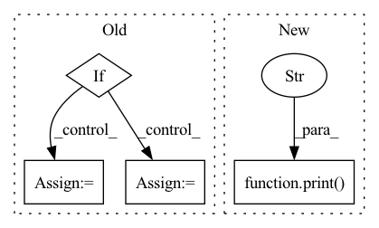

Pattern ID :339

Before Change
assert self.gate_type == "features" or self.gate_type == "heads", f"Gate type must be "features" or "heads"!"
// Initialize gate to 1
if self.gate_type == "features":
self.scale = nn.Parameter(torch.ones((input_shape[-1],)), requires_grad=True).view(1, 1, input_shape[-1])
elif self.gate_type == "heads":
self.scale = nn.Parameter(torch.ones((input_shape[1],)), requires_grad=True).view(1, input_shape[1], 1, 1)
self.scale = self.scale.repeat(1, 1, 1, input_shape[-1])
// Prepare streams info
After Change
self.einsum_in_1 = self.einsum_in_1[:len(self.input_shape)]
self.einsum_in_2 = self.einsum_in_1[self.dim_to_scale]
print(f"{self.einsum_in_1},{self.einsum_in_2}->{self.einsum_in_1}")
// Prepare streams info
self.streams_in_module = {"inputs": [[self.input_name, self.input_shape],
],
In pattern: SUPERPATTERN
Frequency: 3
Non-data size: 4
Instances
Fragment ID: 1224263
Project Name: antofuller/configaformers
Commit Name: 587753fa0f50da143bb3a3ad4da1d65e3ee72c60
Time: 2021-11-11
Author: afuller187187@gmail.com
File Name: norm_module.py
Class Name: Gate
Method Name: __init__
Parent Class: nn.Module
Fragment ID: 1224260
Project Name: mstoelzle/solving-occlusion
Commit Name: 792deaf3cb1fb399f8c60ab670ab9936e8d93537
Time: 2020-12-14
Author: maximilian@stoelzle.ch
File Name: src/learning/models/base_model.py
Class Name: BaseModel
Method Name: __init__
Parent Class: ABC,nn.Module
Fragment ID: 1224255
Project Name: openspyrit/spyrit
Commit Name: c765ffa67ce6930782e3ae1be7517a692de8a7be
Time: 2021-11-23
Author: sebastien.crombez@univ-lyon1.fr
File Name: spyrit/learning/model_Had_1D_DCAN.py
Class Name: compNet_1D_size_stat
Method Name: __init__
Parent Class: nn.Module